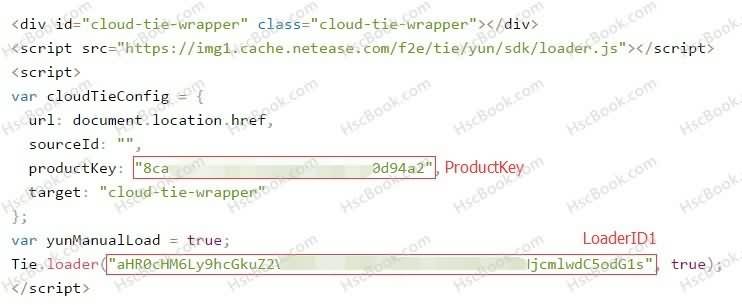

Hexo 安装网易云跟帖评论的方法和注意事项
评论对于国内来说送走多说后拥抱网易云跟帖是一个比较好的选择了，对于不在乎国内的访问的话还是比较推荐Disqus，毕竟网易云跟帖项目才刚刚开始还在BETA状态
准备工作
注意事项
- 评论不能带有任何链接会自动Del，后台看不到也无法审核
文章链接不能有大写的字母或者中文- 注册的时候填写域名千万注意别写错了，只有一次更改机会且无法删除
- 评论数不是真的评论数是参与数，就算未通过审核也在记数内，包括赞
- Maupassant主题修改代码的时候千万要注意缩进要一一对应
- 其他主题重点检查
ProductKey，join-count，cloud-tie-wrapper
注册账号
前往 https://gentie.163.com 按照网站指引注册，添加网站后定位“获取代码页”获取ProductKey、LoaderID1、LoaderID2

通用教程
具体参考官方网的安装帮助文档 https://gentie.163.com/help.html#install
文章评论框
在文章页评论框的DIV处添加代码并替换 ProductKey、LoaderID1 中的文本div 的 id="cloud-tie-wrapper" 和 script 的 target: "cloud-tie-wrapper" 可以更改为其他名称，但是必须是对应的。
1 | <div id="cloud-tie-wrapper" class="cloud-tie-wrapper"></div> |
首页评论数
在主页最尾部添加代码并替换 ProductKey、LoaderID2 中的文本
1 | <script>var yunModuleEnv = true;</script> |
在每个文章列放置显示评论数的span
文章地址是你要显示评论数的文章地址比如首页的文章列表为：
- 文章1
- 文章2
- 文章3
其中文章1的地址为https://hscbook.com/1,那么该span的文章地址就应该为https://hscbook.com/1
1 | <span lang="join-count" class="join-count" data-url="文章地址">0</span> |
Maupassant适用
目前 Maupassant 主题已经添加了网易云跟帖，但是有点缺陷以及首页没有显示评论数，按需修改，不要无脑复制！
文章评论框
Maupassant 主题定位 .\layout\_partial\comments.jade 文件，在最尾部添加代码
1 | if theme.gentie |
首页评论数
Maupassant 主题定位 .\layout\index.jade 文件，在最尾部添加代码，千万千万千万注意要对应缩进
1 | if theme.gentie |
搜索 if post.description 在 if post.description 的上面添加代码
1 | if theme.gentie |
文章评论数
搜索 if page.toc 在 if page.toc 的上面添加代码
1 | if theme.gentie |
修改主题配置
打开主题配置文件 _config.yml 在最后面添加（把ProductKey替换为上面获取的数值），注意“：”之后要有空隔
1 | gentie: ProductKey |
END
Maupassant 修改完成后首页以及文章页上面的评论数样式好像有点问题需要修改一下style文件，你们自己琢磨一下，或者等我有空的时候修改代码再次Pull上主分支吧。有什么问题请在下面留言，觉得文章对你有帮助就多回来看看。目前 Maupassant 主题已经添加了网易云跟帖，并且已完善
网易云跟帖已于2017-08-01正式关闭服务，从此又少了一个优秀的第三方评论服务！
文章最后修订日期：2017-9-22 09:08:03
本文标题：Hexo 安装网易云跟帖评论的方法和注意事项
文章作者：HscPro
发布时间：2017-04-15
最后更新：2021-12-19
原始链接：https://www.hscbook.com/article/hexo-gentie/
版权声明：除非注明，本博文章均为原创，转载请以链接形式标明本文地址
分享